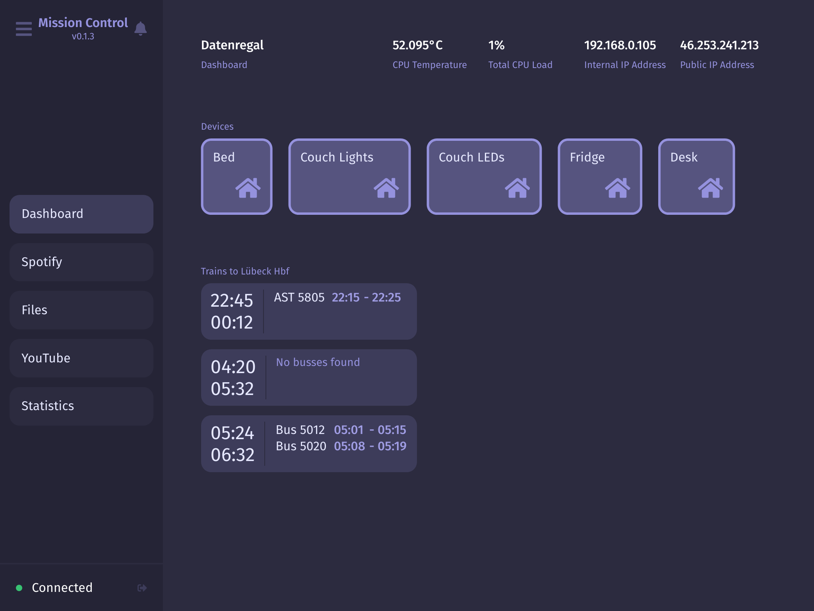

When you start setting up software for your home – be it home automation, a NAS system or something else – you’ll end up having a few different dashboards for control, that are all kind of ugly anyway. That’s where Mission Control comes in. It is a beatutiful and easy-to-configure dashboard system for your home!
Features
- Control your HomeKit devices on the dashboard
- Embeddable file browser, youtube downloader and Spotify player
- Sleek, customizable UI
Installation
Install mission-control and the single-sign-on auth server. Unless reconfigured, mission control will launch a single-sign-on server as a node subprocess.
$ npm install -g @capevace/mission-control @capevace/single-sign-on
Usage
You can now start the server like you would any binary.
$ mission-control --version
v0.1.3
Options
Usage: mission-control [options]
Options:
-V, --version output the version number
-u, --url <url> the url mission control is reachable at
-p, --port <port> the port to use for mission control
-n, --no-sso disable internal auth server process (to use own)
--auth-url <url> the url to use for the single-sign-on server
--auth-port <port> the port to use for the single-sign-on server
-h, --help display help for command
Config
A config file for mission-control will be created at $HOME_DIR/.mission-control/config. This can also be used to configure mission-control. However, options passed as command line arguments override settings in this file.
Screenshots
Planned
- Stability: while Mission Control works gracefully in my home, keep in mind that I’ve mostly built this for myself so not every use case will be stable at the moment
Authors
Lukas Mateffy – @Capevace – mateffy.me
Distributed under the MIT license. See LICENSE for more information.
Contributing
- Fork it (https://github.com/capevace/mission-control/fork)
- Create your feature branch (
git checkout -b feature/fooBar) - Commit your changes (
git commit -am 'Add some fooBar') - Push to the branch (
git push origin feature/fooBar) - Create a new Pull Request